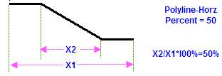

_Leader_Line_tab/Label2_tab-connect_01.png)
図(1)
図(2)
引出し線は、アノテーションと参照するポイントを接続する線を結ぶオブジェクトです。これは、引出し線の表示を設定するチェックボックスです。引出し線はデータラベルとデータポイントが特定の有効な長さを超えた場合にのみ表示します。有効な長さはチェックボックスの隣にあるテキストボックスにパーセント値を入力します。
有効な長さ＝パーセント値％ * (レイヤの高さ + レイヤの幅)/2
引出し線の色をシステム色かカスタム色で指定します。
引出し線の接続線の種類を選択します。直線、ポリライン‐水平、ポリライン‐垂直、ステップ-水平、ステップ-垂直、水平、垂直の7つのオプションがあります。ポリライン‐水平とポリライン‐垂直は3つの区分がある線を作成し、中央の区分は斜めになります。ステップ‐水平とステップ‐垂直は3つの区分がある線を作成し、中央の区分は垂直になります。
ポリライン‐水平とポリライン‐垂直を選択すると、接続線ドロップダウンリストの隣のテキストボックスで2つの変曲点間の水平または垂直距離のパーセントを変更できます(下図(1))。同様に、ステップ‐水平とステップ‐垂直を選択すると、接続線ドロップダウンリストの隣のテキストボックスで変曲点位置を水平または垂直距離のパーセントで指定できます(下図(2))。
|  | |
|
図(1) |
図(2) |
引出し線の幅を指定します。
引出し線の線の種類を指定します。
値を入力して、グラフ上のポイントと、引出線の開始位置との間隔を定義します。この値は、テキスト タブのフォントサイズで定義した、ラベルテキストの高さの%です。
オフセットする値を入力して、引出し線の近傍ポイントとテキスト枠の距離を設定します。この値も、ラベルテキストのフォント高さの%です。
| 形状 | 引出し線の先端にどの矢印を使うか、どの矢印形状を使うかを指定します。 |
|---|---|
| 方向 | 矢印の先端が選択されているとき、このオプションを利用出来ます。矢印先端の方向を設定します。テキストをプロットへ、プロットをテキストへ または両方 |
| 太さ | 矢印の先端が選択されているとき、このオプションを利用出来ます。矢印の幅を指定します。 |
| 長さ | 矢印の先端が選択されているとき、このオプションを利用出来ます。矢印の長さを指定します。 |